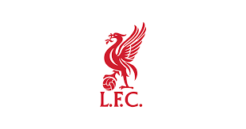

ลิเวอร์พูล
ทีมที่อยู่ในหัวใจและแรงบันดาลใจ"
ฟุตบอล
"กีฬาที่เต็มไปด้วยพลังและมิตรภาพ"

เล่นเกม
"โลกแห่งการผจญภัยและความสนุก"
ทีมที่อยู่ในหัวใจและแรงบันดาลใจ"
"กีฬาที่เต็มไปด้วยพลังและมิตรภาพ"
"โลกแห่งการผจญภัยและความสนุก"
"การเล่นเกมคือการผจญภัยที่ไม่มีที่สิ้นสุด สนุกกับการสร้างสรรค์ ท้าทาย และการได้เจอเพื่อนใหม่ ๆ ในโลกเสมือนจริง"
ดูเพิ่มเติม